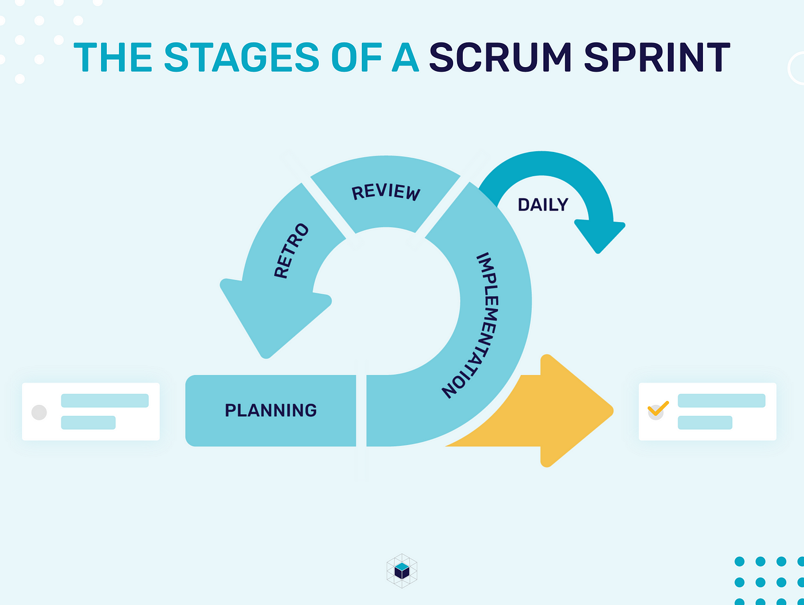

- Integrate project management methodologies to a software development project
- Become proficient in UML
- Discover what it means to be risk-aware
Unit 1: Introduction to Secure Software Development
- W3C
- ISOC
- NIST
- ISO/IEC
- IETD
- IEEE
- OMG
OWASP Top 10
- A01: Broken Access Control
- A02: Cryptographic Failures
- A03: Injection
- A04: Insecure Design
- A05: Security Misconfiguration
- A06: Vulnerable and Outdated Components
- A07: Identification and Authentication Failures
- A08: Software and Data Integrity Failures
- A09: Security Logging and Monitoring Failures
- A10: Server-Side Request Forgery
OWASP Top 10 Proactive Controls
- C1: Define security requirements
- C2: Leverage security frameworks and libraries
- C3: Secure database access
- C4: Encode and escape data
- C5: Validate all inputs
- C6: Implement digital identity
- C7: Enforce access controls
- C8: Protect data everywhere
- C9: Implement security logging and monitoring
- C10: Handle all errors and exceptions
Weaknesses identified by OWASP
- Broken Authentication
- Sensitive Data Exposure
- XML External Entities
- Broken Access Control
- Security Misconfiguration
- Cross-site Scripting
- Insecure Deserialization
- Using Components with Known Vulnerabilities
- Insufficient Logging and Monitoring
- Prioritise Individuals and interactions over processes and tools
- Prioritise working software over comprehensive documentation
- Prioritise customer collaboration over contract negotiation
- Prioritise responding to change over following a plan
- Scrum
- Paired Programming
- DSDM
- TDD

- Identify important security concerns
- Identify mechanisms to respond to these concerns
- Integrate security into each timeboxed sprint
- Create methods to test each security concern at the end of a sprint
- Test for security problems at the end of each sprint

- Use case diagram
- Sequence diagram
- Class diagram
- Activity diagram
- Object diagram
- Composite structure diagram
- State machine diagram
- Deployment diagram
- What information is represented in a use case diagram?
- What can change throughout the software development life cycle?
- True or False: OWASP is an acronym of Open Web Active Security Project?
User stories
Requirements
False
What is software architecture?
Software architecture is a description of the subsystems of components of a software system and the relationships between them.
Aspects of Software Architecture
- System
- Structure
- Environment
- Stakeholder
Type of Software Architects
- Technical architect
- Security architect
- Information architect
- Infrastructure architect
- Solution architect
- Enterprise architect
- System architect
Architectural quality attributes
- Modifiability
- Testability
- Scalability and performance
- Availability
- Security
- Deployability
- Confidentiality
- Integrity
- Availability
- Define areas of interest in the application (what parts are critical and need to be secured?)
- Analysis of software architecture
- Review of implementation details
- Verification of logic and syntax
- Whitebox/Unit testing
- Blackbox testing
- Identify important assets
- Decomposing the application into components
- Identifying and categorising threats to each asset or component
- Ranking the threats based on an establish risk model
- Developing threat mitigation strategies
- Overflow errors
- Unvalidated/Improperly validated inputs
- Improper access control
- Cryptography issues
- Information leaks
- Open port access
- Open access to a web server
- Open access to files, folders, and databases
- Race conditions
- System clock drifts
- Insecure file/folder operations
- Server-Side Template Injection
- Denial of Service Attack
- Cross-Site Scripting
- Use raw input instead of input for reading input
- Do type conversions and validation manually
- Add exception handling
- Don’t use eval or exec
- Don’t use pickle for serialisation use JSON or YAML
- Guard again integer overflows
- Use template strings for string formatting
- Use with when operating with files to ensure they are closed
- Validate sensitive information like passwords
- Avoid storing sensitive data local to functions
- Avoid race conditions and thread deadlock
- Keep your system up to date
- Validate input
- Keep it simple
- Principle of least privilege
- Sanitize data
- Authorize access
- Perform effective QA
- Practise defence in layers
- Define Security requirements
- Model threats
- Architect and design for security policies
- Adapter Pattern
- Observer Pattern
- Strategy Pattern
- Visitor Pattern
- Abstract Factory Pattern
- Template Pattern
- Singleton
Discussion Topic
Open source tools are available to create UML diagrams, some are listed below. This list is not exhaustive. The benefit of using such tools is that they ensure that the recognised UML components are used to represent the parts of the model correctly.
- Visual Paradigm
- Sequence Diagram
- Umbrello
Choose an open-source UML tool from the list above. Select one of the coding weaknesses which have been identified by OWASP and create a flowchart of the steps which may have led to the weakness occurring. Which UML models might you use to present the design of your proposed software, and why are they the most appropriate choice(s)?
What does OWASP do?
OWASP are an organisation that provide you with a checklist of best practices on how to improve software security.
OWASP 2021 Top 10 (OWASP, 2021)
- A01: Broken Access Control
- A02: Cryptographic Failures
- A03: Injection
- A04: Insecure Design
- A05: Security Misconfiguration
- A06: Vulnerable and Outdated Components
- A07: Identification and Authentication Failures
- A08: Software and Data Integrity Failures
- A09: Security Logging and Monitoring Failures
- A10: Server-Side Request Forgery
The OWASP Top 10 Proactive Controls (OWASP, 2018)
- C1: Define security requirements
- C2: Leverage security frameworks and libraries
- C3: Secure database access
- C4: Encode and escape data
- C5: Validate all inputs
- C6: Implement digital identity
- C7: Enforce access controls
- C8: Protect data everywhere
- C9: Implement security logging and monitoring
- C10: Handle all errors and exceptions
What I have selected from the OWASP Top 10
From the OWASP top 10 2021 I decided to focus on Injection because there lots of different types of injection ranging from command injection to SQL injection.
What is an injection attack?
IBM define injection attacks as a type of attack that allows an attacker to inject code into a program or query or inject malware onto a computer in order to execute remote commands that can read or modify a database, or change data on a web site. (IBM, N.D)
What is an SQL Injection attack?
IBM defines SQL Injection as an attack that takes advantage of the SQL syntax to inject commands that can read or modify a database, or compromise the meaning of the original SQL query. (IBM, N.D)
How to prevent injection attacks
The OWASP top 10 proactive controls suggests to escape data and validate all inputs in order to prevent all types of injection attacks (OWASP, 2018).
How to prevent SQL Injection attacks
OWASP suggests 4 different ways to defending against SQL injection option 1 is to use prepared statements, option 2 is to use properly constructed stored procedure, option 3 is to all list input validation and option 4 is to escape all user supplied input (OWASP, N.D).
What is a prepared statement?
Prepared statements are parameterized queries that force the developer to define all SQL code first and pass in each parameter to the query later.
Example of an SQL Injection query
SELECT * FROM Users WHERE UserId = 1 OR 1=1;
This query would return all rows for the user table as 1=1 is always true.
This table could contain confidential information such as the first name, last name and address information about all users for a particular service which a hacker could sell for financial gain or use to steal someone’s identity.
SQL Injection Flow chart

Creating a prepared statement in Python
import mysql.connector
try:
connection = mysql.connector.connect(host='localhost',
database='python_db',
user='admin',
password='root')
cursor = connection.cursor(prepared=True)
sql_update_query = "UPDATE Users SET Password = %s WHERE UserId = %s"
data_tuple = ('qwerty', 1)
cursor.execute(sql_update_query, data_tuple)
connection.commit()
print("User table updated using the prepared statement")
except mysql.connector.Error as error:
print("parameterized query failed {}".format(error))
finally:
if connection.is_connected():
cursor.close()
connection.close()
print("MySQL connection is closed")Types of SQL Injection attacks
The classic types of SQL injection attacks are Tautology based attacks, piggy-backed queries, logically incorrect attacks, union query, inference attack, stored procedure attack, blind injection, timing attacks, Compound SQL Injection attacks, Fast Flux SQL Injection attacks (P. Kumar and R. K. Pateriya, 2012)

Reference List
OWASP. (2021). OWASP Top 10:2021. Available from: https://owasp.org/Top10/ [Accessed 16th March 2024]
OWASP. (2018). OWASP Proactive Controls. Available from: https://owasp.org/www-project-proactive-controls/ [Accessed 16th March 2024]
OWASP. (N.D). SQL Injection Prevention Cheat Sheet. Available from: https://cheatsheetseries.owasp.org/cheatsheets/SQL_Injection_Prevention_Cheat_Sheet.html [Accessed 16th March 2024]
IBM. (N.D). Injection attacks. Available from: https://www.ibm.com/docs/en/snips/4.6.0?topic=categories-injection-attacks [Accessed 16th March 2024]
P. Kumar and R. K. Pateriya. (2012) ‘A survey on SQL injection attacks, detection and prevention techniques’, Third International Conference on Computing, Communication and Networking Technologies. Coimbatore, India, 2012. America: IEE. pp. 1-5, doi: 10.1109/ICCCNT.2012.6396096.
Comment 1
Thank you, Sam
"Who are OWASP?" -> "Who is OWASP?" OWASP is a single body, therefore, who is.
I would like to see a little more discussion coming through in relation to the attack type identified. Discussion will help to reveal your knowledge and understanding, which is an assessed element of the ePortfolio into which this collaborative discussion will be placed.
The flow chart is fine. There is an opportunity to include the examples of the types of queries which might be entered when a SQL attack is being executed. This will just help to make it a little more precise and, again, showcase your knowledge and understanding.
Best wishes,
Cathryn
Comment 2
Hi Samuel,
Thank you for sharing your initial post. Placing headings on each main topic makes it easy to overview the content of your post.
As for the prevention of Injection attacks, perhaps, it would be clearer to the readers if you identify the exact OWASP proactive control or method you are proposing. You can do this by including the code with the protocol name (e.g. C4: Encode and Escape Data). Did you suggest other OWASP proactive controls to prevent an Injection attack besides C4? In my opinion, it is worth considering the ‘Limit’ SQL control as another preventive measure, as W3Schools (N.D.) explain that they restrict how much data can be taken from databases.
It was a good choice to provide the readers the code for the section “Creating a prepared statement in Python”. Personally, I do not have an idea how to do this. Therefore, it would be helpful for me to refer back to this in the future in case there is a need for me to write prepared statements for projects that would require security against the weakness you have highlighted.
Kind regards,
Patricia
References:
W3Schools (N.D.), SQL SELECT TOP, LIMIT, FETCH FIRST ROWS ONLY, ROWNUM. Available from https://www.w3schools.com/sql/sql_top.asp [Accessed 22 March 2024].
Description
In this section, I will be using the Gibbs Reflective Cycle to reflect on my experience of the Secure Software Development module, specifically Unit 1: Introduction to Secure Software Development.
Feelings
While alot of the content covered in this unit, I already knew improving my knowledge can only be considered a good thing as it will help me become a more well-rounded developer. I believe continual development to be one of the most important things anyone can do in their professional lives and gaining a greater understanding of a topic is vital for ones professional development.
Evaluation
The main development I made throughout this unit was in regards to my knowledge of different UML models. Previously I had a basic knowledge of UML after completing the Object Oriented Programming Module but it was something I wasn't confident in so it was good that I got to go over them again so that I could understand the different UML models better.
Analysis
Considering how an attacker may target a system through a series of UML diagrams helps to mitigte security risks by reducing the attack surface a hacker can exploit to gain control of a system.
Conclusion
In this unit, I reinforced my knowledge of OWASP. During my internship I have been exposed to OWASP as I have completed training on the fundamentals of OWASP and we have automation in place that raises OWASP bugs. As OWASP is important to my job knowing it better could help improve my job performance. After completing this unit, my understanding of UML models improved. I believe this will be beneficial in my career as for my large intern project which I have to present next month I made UML diagrams as part of the project plan so understanding them better allowed me to make higher quality diagrams. This module signifacntly improved my knowledge of project management methodologies as previously I didn't know how to incorporate security into projects. Lastly, as a vulnerable adult, learning how organisations manage risks associated with vulnerable employees can help me apply their practices to myself to avoid being potentially exploited in the future.
Action plan
I am going to think actively about how I can write more secure code and I am going to create UML models prior to beginning any project I work on.
Unit 2: UML Modelling to Support Secure System Planning
- Learn how to integrate security into each stage of the SDLC
- Gain hands-on experience of different UML models
- Understand how integrating software security can be problematic
Question 1:
Create a 2-column multi-line table. In the left-hand column, include the software development stages of the Scrum agile life cycle approach to project management. In the right-hand column, describe the processes which you recommend are applied at each stage to ensure that secure software is produced at the end of the development. To support the preparation of your response, you can refer to the following literature:
Sharma, A. & Bawa, R. K. (2020) Identification and Integration of Security Activities for Secure Agile Development. International Journal of Information Technology.
| Scrum Stage | How to increase security |
|---|---|
| Initiation |
|
| Planning and estimation |
|
| Implementation |
|
| Reviewing |
|
| Releasing |
|
Question 2
Select five terms from ISO/IEC Standard 27000 Section 3 Terms and Definitions and write a 300-word blog post on how people can be managed to overcome cyber security attacks from the inside.
How people can be managed to overcome cyber security attacks from the inside?
As Thomas Reid rather eloquently put it “a chain is no stronger than its weakest link” (Reid, 1786). Contextualising this in terms of security the weakest link refers to the human element involved. In this blog post I am going to discuss how people can be managed to overcome cyber security attacks from the inside referencing chapter 3 from the ISO/IEC Standard.
The terms I focused on were access control, competence, monitoring, policy, and risk assessment. My rational for selecting these key terms was that I believe they play a significant role in how people can be managed to overcome cyber security attacks.
Training from leading security experts on how to spot and mitigate the latest security threats as well as educating employees on ethics, social engineering, phishing attacks, regulations, and compliance will greatly reduce the likelihood of threats to the system.
Requiring employees to take personality tests would allow organisations to spot people who could become security threats. For example, spotting vulnerable people who could be coerced. There are numerous studies done on this such as the technical report on Identifying At-Risk Employees (U.S. Department of Energy, 2010) and the journal article on Behavioural Analysis of Insider Threats (Azaria et all., 2014).
Having security policies in place, utilising security and monitoring software, having robust access controls and requiring admin approval to perform certain functions in conjunction with following the principle of least privilege help to ensure the security of a system.
As human error is one of the leading causes of cyber-attacks, I believe it’s vital for an organisation to create an atmosphere where people can learn from their mistakes. This is perfectly summed up by Henry Ford who stated, “The only real mistake is the one from which we learn nothing”.
As humans are the biggest threat to cyber security it is important that they feel valued as If a disgruntled employee could become a security threat.
References
ISO/IEC 27000:2018(EN) - international organization for standardization. ISO. Available at: https://www.iso.org/obp/ui/#iso:std:iso-iec:27000:ed-5:v1:en [Accessed 21 March 2024]
U.S. Department of Energy (2010). Identifying at-risk employees: A behavioral model for predicting potential insider threats. Available from: https://doi.org/10.2172/1000159 [Accessed 21 March 2024]
Azaria, A., Richardson, S K & Subrahmanian, V S. (2014) Behavioral Analysis of Insider Threat: A Survey and Bootstrapped Prediction in Imbalanced Data. IEEE Transactions on Computational Social Systems 1(22): 135-155. doi: 10.1109/TCSS.2014.2377811. [Accessed 21 March 2024]
Reid, T. (1786). Essays on the Intellectual Powers of Man. Great Britain: John Bell
- Identifying the problem
- Understanding the problem
- Designing/Creating the fix
- Creating a deployable package
- Distributing the patch
- Monitoring the status of the patch
Security is provisioned at a single point in the development lifecycle so it may not accommodate all the needs the development team has.
You may not know all the requirements at the beginning of the project you so may not have a complete perspective of what is needed in terms of security.
- Sec Dev Checklist
- Training
- Data Flow Diagram
- Threat Modelling
- Security Architecture Review
- Code Analysis
- Dependency Analysis
- Dynamic Security Test
- Pen Testing
- Vulnerability management and patching
- Security User stories
Hi Miguel,
Thank you for providing your thoughts on what broken access control is and how to prevent it. I found it to be rather informative.
I liked how you used the Equifax breach in 2017 as a case study as it showed the aftereffects of an attack from the perspective of a company and its customers. Thinking about the knock-on effects of an attack and showing different perspectives shows a good level of knowledge about broken access controls.
You have clearly done a lot of research into broken access controls showing how different techniques can be combined to fix any access control issues.
Your use of swimlanes in your UML diagram made it clear what aspect of the system manages each part of the process. I liked how you used separate diagrams to demonstrate what broken access controls are and how to prevent broken access controls.
Regarding your flowchart an oval should be used to represent the start and end process (Oblikwu. et al., 2019), you have used the state diagram start and stop notation. Additionally, could you have used separate headers or annotations to distinguish the flow charts to make it clearer which diagram is which.
Have you thought about how access control policies can be used in the cloud to enforce role-based access control? For example, AWS uses IAM Roles to manage access based on roles. (Amazon, N.D)
Have you considered how following the Principle of Least Privilege to limit the access of users can reduce the impact a hacker can have after exploiting broken access controls? (Maric, 2023)
Regarding you references I noticed you aren't showing the access date that is shown in the UoEO Harvard referencing guide. I would suggest to have a look at the Harvard referencing guide which can be found in the Plagiarism and Referencing section on the Study Skills Hub. I have attached the University of Essex Harvard Referencing Guide that shows examples of how to reference sources.
Best regards,
Sam
References
Amazon. (N.D.) AWS Identity and Access Management. Available from: https://aws.amazon.com/iam/ [Accessed 24 March 2024]
Maric, N. (2023) Broken Access Control: Attack Examples and 4 Defensive Measures. December 29, 2023. Available from https://brightsec.com/blog/broken-access-control-attack-examples-and-4-defensive-measures/#:~:text=Implementing%20the%20Principle%20of%20Least%20Privilege,-The%20Principle%20of&text=The%20principle%20is%20used%20to,system%20or%20accessing%20confidential%20information [Accessed 24 March 2024]
Oblikwu, P., Dekera, K. & Udo, Edward. (2019). THE PRACTICALITY OF ENGINEERING PRINCIPLES IN SOFTWARE ENGINEERING. International Journal of Advanced Research. 7. 923-934. 10.21474/IJAR01/10234.
Hi Gareth,
I found your post to be rather interesting as I had limited knowledge on cryptography, so I learnt a lot from your post.
I liked how you contextualised the importance of cryptography. Focusing on how cryptographic failures on an ecommerce website for online transactions can lead to the exposure of sensitive data. I was wondering if you had done any research into the relevant legislation such as The Payment Services Regulations (The Payment Services Regulations, 2017).
I thought it was a good idea to give examples of cryptographic failures in a bullet point list as it is very clear and, it can be used to spot common cryptographic failures.
Giving examples of deprecated hashing algorithms shows that you are very knowledgeable about the different hashing algorithms available. Perhaps you could have added more context into why MD5 or SHA1 shouldn’t be used. For example, with MD5 it is susceptible to collision attacks and preimage attacks (TechClaw, 2023).
Have you considered how bleeding edge technologies implement cryptography differently to your average device? For example, how a salt is used in cryptography on a blockchain to defend against rainbow table attacks (Fudhah, 2022).
Regarding your UML diagram I noticed you were missing the start and stop processes and I noticed your flowchart is on a grid did you consider exporting it to a PNG or hiding the grid.
An improvement you could have made to your post was to have a separate flowchart for all of the examples of cryptographic failures instead of having just one general flowchart.
Additionally, I noticed you haven’t referenced any academic articles in your initial post such as journal articles as this is something Dr Peoples recommended I would advise you on the summary post to make sure to include a reference to an academic article.
Best Regards,
Sam
References
Fudhah A., A. (2022). 'Blockchain and Bigdata to Secure Data Using Hash and Salt Techniques', Journal of Information Technology Management, 14(2), pp. 15-25. doi: 10.22059/jitm.2022.86924
TechClaw. (2023). Exploring the Power and Vulnerabilities of the MD5 Algorithm. September 13 2023. Available from: https://medium.com/@techclaw/exploring-the-power-and-vulnerabilities-of-the-md5-algorithm-feb249ef9dfb [Accessed 24 March 2024]
The Payment Services Regulations 2017. United Kingdom. Available from: https://www.legislation.gov.uk/uksi/2017/752/part/7/made [Accessed 24 March 2024]
Description
In this section, I will be using the Gibbs Reflective Cycle to reflect on my experience of the Secure Software Development module, specifically Unit 2: UML Modelling to Support Secure System Planning.
Feelings
There was a lot of documentation for this unit, compared to unit 1. I believe this to be beneficial as doing exercises is a good way of reinforcing your learning. As I haven't done many peer responses before gaining greater exposure to them could be beneficial as it could be a skill I may need at some point in the not to distant future. I believe the feedback I got from Dr Peoples to be invaluable as it will help to improve my writing style allowing me to get a better grade for the module, additionally getting feedback for an industry expert on how to improve can only be considered advantageous.
Evaluation
The main development I made in this unit of the module was in regard to my writing style the reason for this is because the majority of the artefacts for this unit were writing exercises. Doing these exercises expanded by vocabulary as I tend to overuse the same phrases. Additionally reading through other peoples collaborative discussion posts and blog posts allowed me to gain a understanding of how people think which is something I am not very good at due to my disability.
Analysis
Understanding the importance of security patching and the weakness of security in the SDLC has helped me to become a more well rounded developer as previously this was information I didn't know much about.
Conclusion
In this unit, we put into practice the theory we had covered in Unit 1 related to UML models and we looked at the weaknesses of security for the different project management methodology models.
Action Plan
I will take on the feedback received by my peers and lectures to improve my writing style and to be able to gain insight into how other peoples thoughts have been impacted by their professional experience. This is vital as I am still a relatively inexperienced developer, so understanding more experienced developers' thought processes can help me learn.